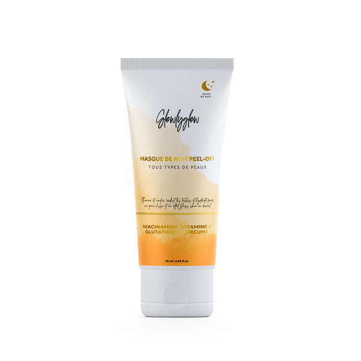

Glowly Glow • Skincare & hiérarchisation catalogue
Catalogue dense
Hiérarchiser
Produits héros + contenus
Image plus premium
Glowly Glow
La marque dispose d’une vraie richesse produit. L’enjeu était de la rendre immédiatement lisible et plus désirable.
Visage, corps, capillaires, routines et packs.
Passer de “tout montrer” à “bien faire lire”.
Choix des références clés, axes créatifs et formats.
Message plus clair et base plus solide pour social et ads.

Masque Nuit, Gommage Enzymatique, Lumieyes.
Des références capables de porter l’accroche, la preuve et la mémorisation.
Un catalogue qui devient plus éditorial.
La marque paraît plus structurée et plus crédible dès les premiers contenus.